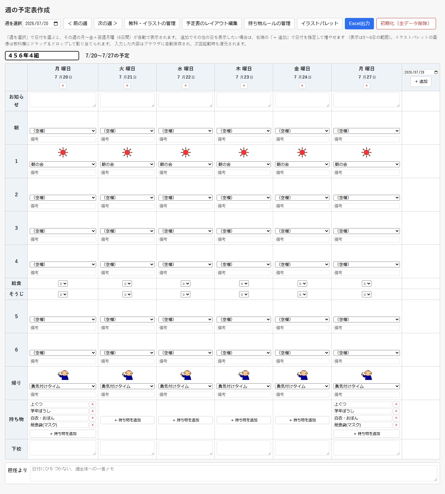
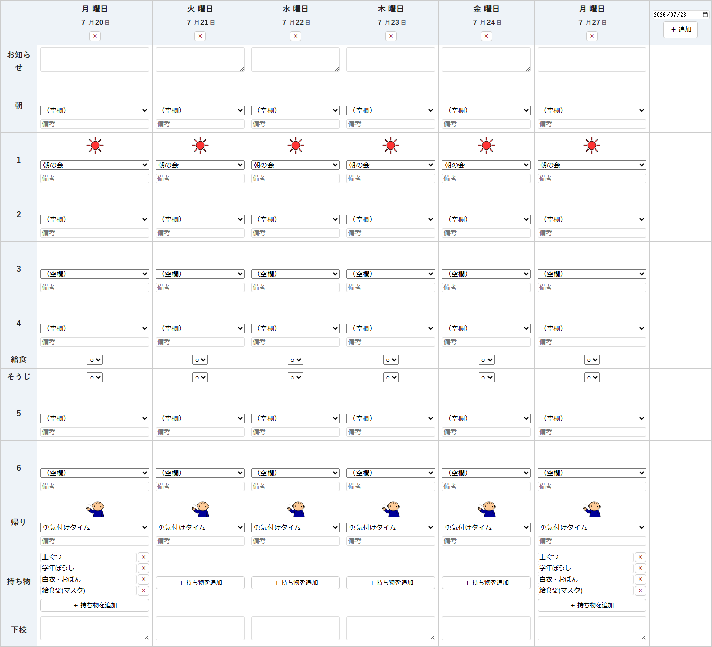
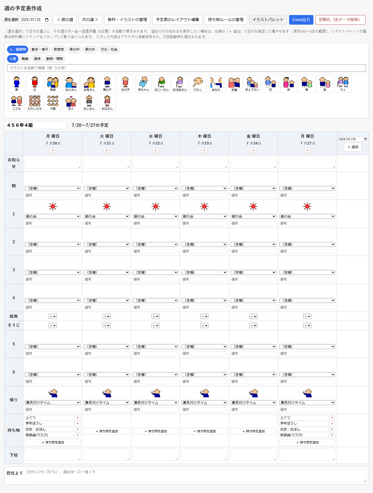
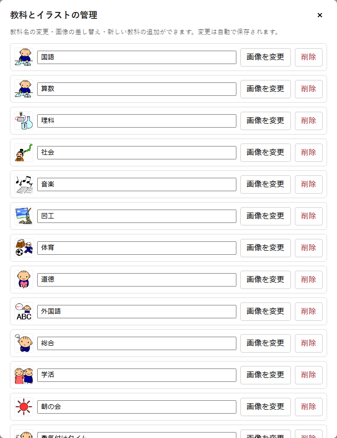
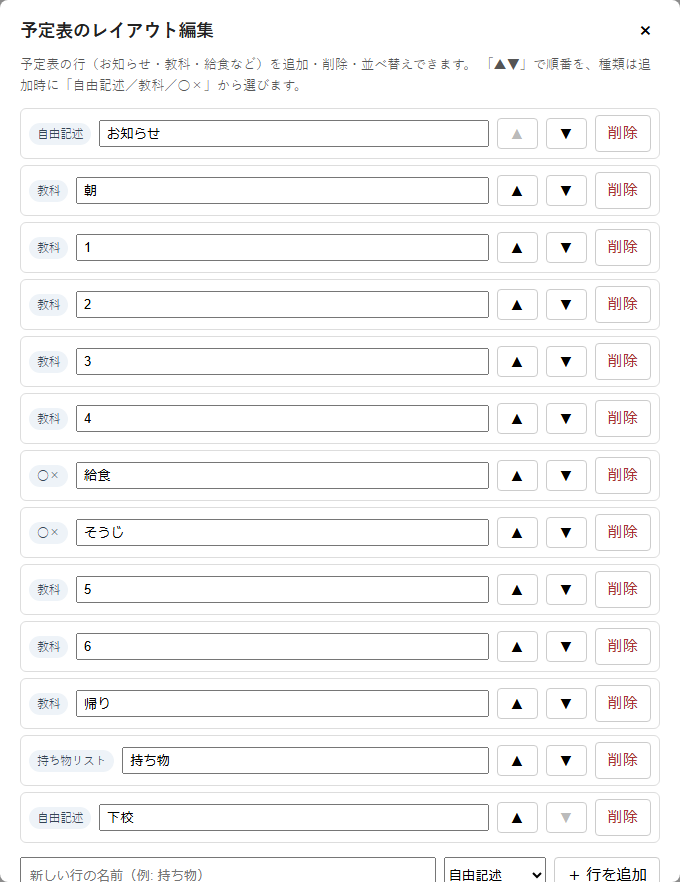
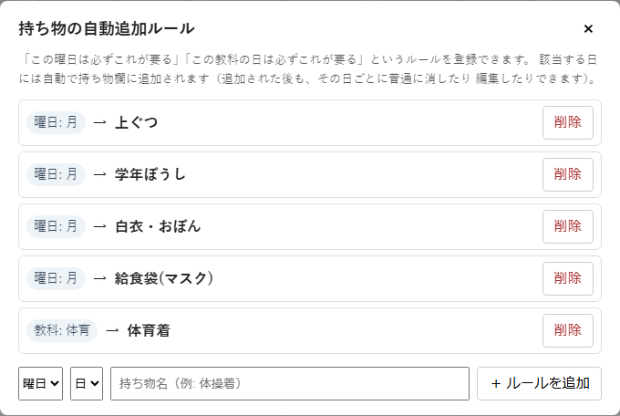

このアプリは、週の予定表（時間割・連絡事項）をブラウザ上で作って、Excelファイルとして ダウンロードするための道具です。入力した内容はすべてこのブラウザの中（LocalStorage、 ページを閉じても消えない保存領域）に自動保存され、外部のサーバーには送信されません。 画面を見ながら操作したい場合は、このページを別タブのまま開いておくと便利です。
まずは画面のどこに何があるか、大まかに確認しましょう。

予定表に表示する日付は、上の①週を選ぶで決めます。日付を1つ選ぶと、その週の 月〜金＋翌週月曜の6日間が自動で組み立てられます。「＜ 前の週」「次の週 ＞」ボタンでも 1週間ずつ移動できます。
それ以外にも見せたい日（土曜授業など）があれば、表の右端から日付を指定して追加できます。 表示できる日数は5〜9日の範囲です。

予定表の行の種類は「予定表のレイアウト編集」で変更できますが、標準では次の4種類があります。 それぞれ入力の仕方が少し違います。
入力した内容は、キーボードでの入力やプルダウンの選択と同時にブラウザへ自動保存されます。 「保存」ボタンは無いので、押し忘れの心配はありません。
ツールバーの「イラストパレット」を開くと、教科欄にドラッグ＆ドロップできるイラスト一覧が 表示されます。上のタブ（大分類→中分類）や検索欄でイラストを探し、教科欄の画像部分まで マウスでドラッグして離すと、その1コマだけイラストが差し替わります （教科プルダウンを選び直すと、差し替えたイラストは元に戻ります）。

「教科・イラストの管理」画面から画像を変更すると、その教科すべてに既定のイラストとして 使われます。ドラッグ＆ドロップは「今日のこの1コマだけ」のような一時的な差し替えに向いています。
ツールバーの「教科・イラストの管理」から、教科名の変更・イラストの差し替え・新しい教科の 追加や削除ができます。ここでの変更は、その教科を使っているすべての予定表に反映されます。

一覧を下までスクロールすると、「＋ 教科を追加」の欄があり、新しい教科（家庭科など）を 追加できます。
「予定表のレイアウト編集」では、「お知らせ」「1」「給食」のような予定表の行そのものを 追加・削除・並べ替えできます。

行の種類は、追加した後から変更できません。種類を間違えた場合は、いったん削除してから 正しい種類で追加し直してください。
「この曜日は必ずこれが要る」「この教科の日は必ずこれが要る」というルールをあらかじめ 登録しておくと、条件に合う日の持ち物欄に自動で追加されます。

自動で追加された持ち物も、ふつうの持ち物と同じように、その日ごとに消したり書き換えたり できます。消しても、ルール自体が消えるわけではありません。
ツールバーの「Excel出力」（画面全体の見方の③）を押すと、今表示している予定表を Excelファイル（.xlsx）としてダウンロードします。学校で使っている参考の様式に近い 見た目になるよう作られています。
画面をそのまま印刷したい場合は、ブラウザの印刷機能（Ctrl+P、Macは⌘+P）が使えます。 ボタン類やイラストパレットは印刷されず、A4横向きに収まるよう調整されます。
入力した予定・教科・レイアウト・持ち物ルールは、すべてこのブラウザのLocalStorage （ページを閉じても消えないブラウザ内の保存領域）に自動で保存されます。次に同じブラウザで 開いたときも、続きから編集できます。
ただし、これは「このパソコンの、この同じブラウザ」の中だけに保存される仕組みです。 別のパソコンやスマートフォン、別のブラウザからは同じデータは見えません。ブラウザの 「閲覧履歴・データを消去」を行うと、この予定表のデータも一緒に消えてしまうことがあるので 注意してください。
画面全体の見方の③にある「初期化（全データ削除）」ボタンを押すと、入力した予定・教科・ レイアウト・持ち物ルールなど、すべてのデータを削除して初期状態に戻します。 この操作は取り消せません。押す前に確認メッセージが出るので、必要なデータが残って いないか必ず確認してください。
「どこの誰が作ったか分からないアプリを学校で使って大丈夫？」と心配になるのは自然なことです。 このアプリは、次のような形で公開されている「オープンソース」というものなので、その点を 説明します。
GitHub（ギットハブ）とは、プログラムの「設計図」にあたる元のコード（プログラムの 中身そのものの文章）を、世界中の誰でも見られる状態でインターネット上に保管・公開できる サービスです。多くのプログラマーが自分の作ったプログラムを公開するのに使っている、 いわば「プログラムの図書館」のような場所です。
このアプリの中身（動きを決めているコードすべて）は、GitHub上の次のページで 公開されています。
公開ページ：https://github.com/Ikedia7/Weekly_Schedule
配信元（実際にこのアプリが動いているページ）：https://ikedia7.github.io/Weekly_Schedule/
このように、プログラムの中身を誰でも自由に確認できる状態で公開することを 「オープンソース」と呼びます。反対に、中身が非公開で外から何をしているか 分からないプログラムは「クローズドソース」と呼ばれます。
学校で使う道具として見たときに、オープンソースであることには次のような意味があります。
とはいえ、個人情報（子どもの氏名など）を入力する場合は、念のため学校で定められている ルール（校務での外部ツール利用に関する取り扱い）を確認してから使うと安心です。
このガイドで分からないことがあれば、まずは実際に画面を触って試してみてください。 入力してもすぐには失われないので、色々な操作を気軽に試せます。